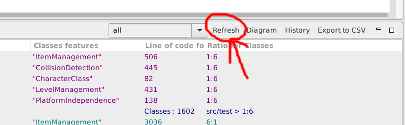
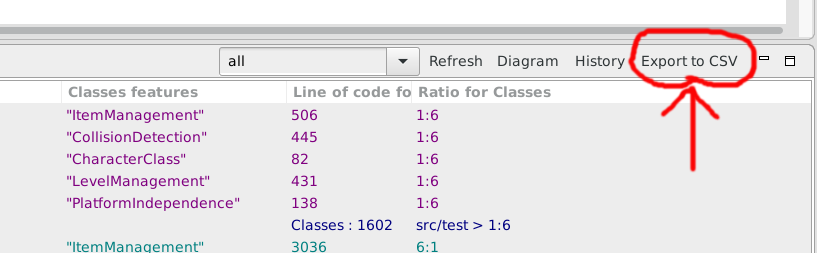
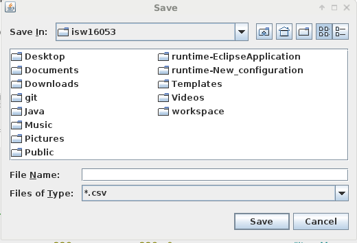

Save Metrics
The calculated Metrics will be saved in a CSV-File after the User runs FMC,
also they will be saved after a fix time(10 minutes) and after clicking the Refresh Button.
The CSV-Files are stored in the Project Folder under "fmc".

Furthermore the User can choose his own location to save the Metrics by clicking the "Export to CSV" Button.

And he can name the File by himself.
